At the beginning, all of the matter and energy in the universe is condensed in a single point. When energy randomly changed, that point started expanding into the universe we know today.
Next Event
The Universe is Cool Now
The temperature of the universe had cooled from ~4000K (6740F) to ~300K (80F), meaning liquid water and early life could theoretically have appeared.
Next Event
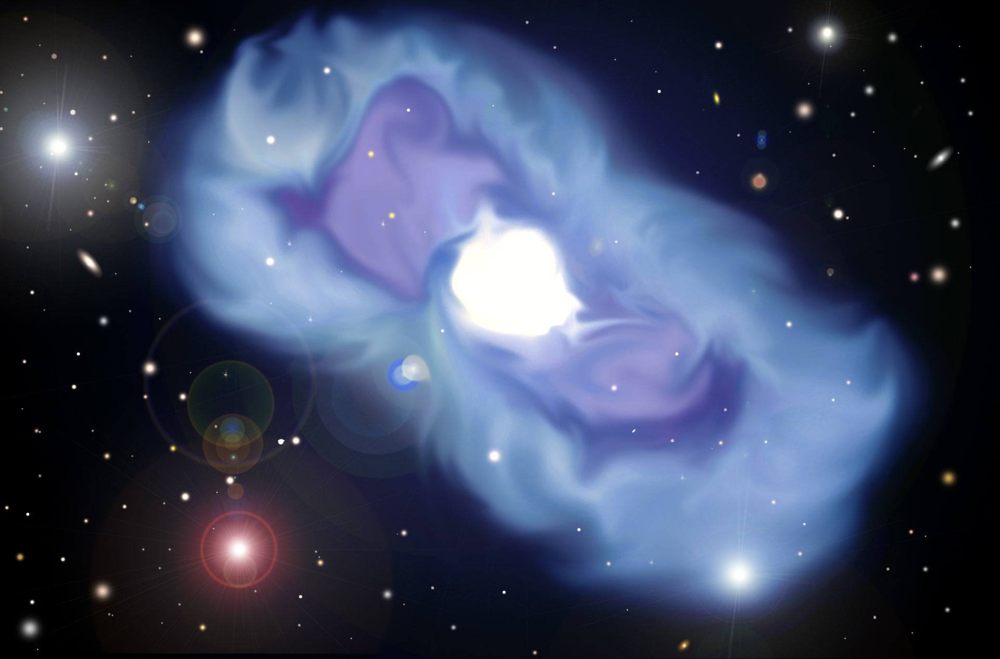
Hey, Are Those Stars?
Reionization begins, which makes new stuff appear. This lets the first stars begin to form
Next Event
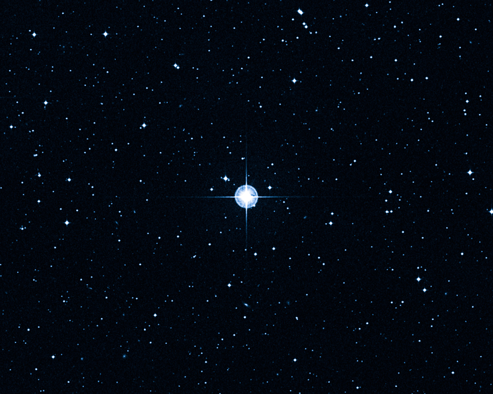
Those Are Definitely Stars
The first stars begin to shine. These early stars are Population II, which means that they’re mostly made of helium.
The oldest, unconfirmed star is HD 140283, also known as the "Methuselah" Star.
Next Event
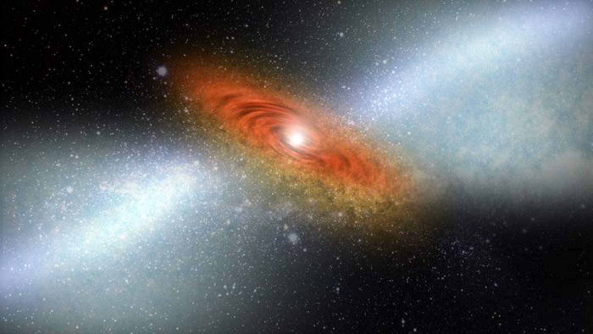
Quasars!
The oldest, unconfirmed quasar forms: UDFj-39546284.
Quasars form the centers of galaxies and emit tons of energy.
Next Event
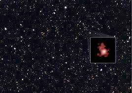
And Also Galaxies!
The oldest known galaxy forms: GN-z11.
Galaxies are massive groups of stars bound together by gravity.
Next Event
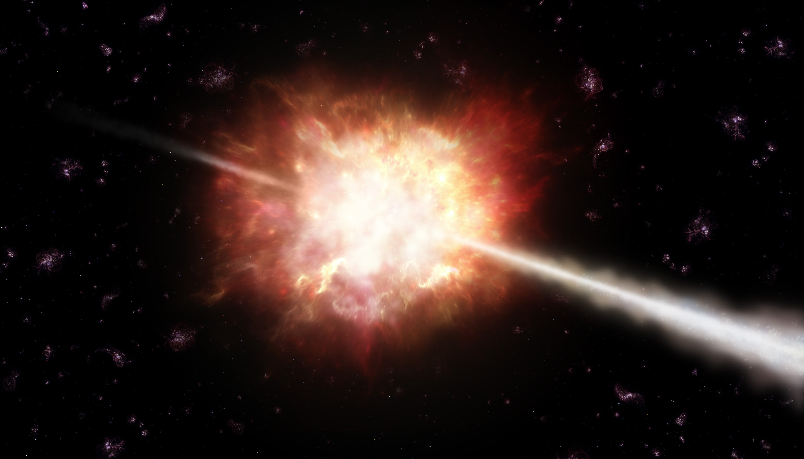
What’s That Bright Light?
GRB 090423 is the oldest known gamma ray burst. These bursts are the universe’s most energetic explosions since the Big Bang, often associated when stars collapse and blow up.
Next Event
Wow, You’re Old
The oldest known planet is created: PSR B1620-26 b. Also known as the Genesis Planet or Methusaleh, it is a gas giant formed within the Messier 4 Globular Cluster (a group of stars that isn’t a galaxy)
Next Event
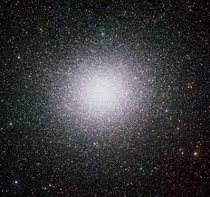
Big Galaxies
Omega Centauri, the largest globular cluster in the Milky Way is formed
Next Event
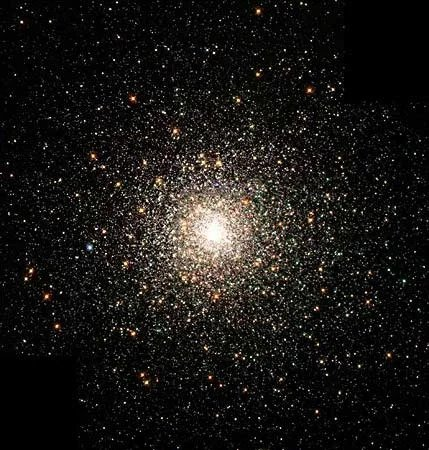
Population 1: Sunny Stars
The first Population I stars are formed. Our Sun is a Population I star. These stars contain heavier elements than Population II, which allows for the formation of rocky planets.
Next Event
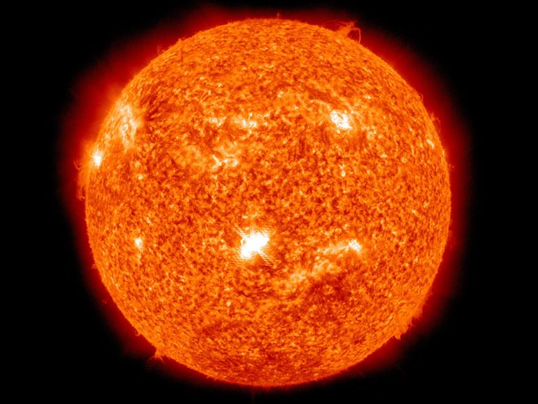
That’s Our Sun
The Sun forms and the excess material begins to form the rest of the Solar System.
Next Event
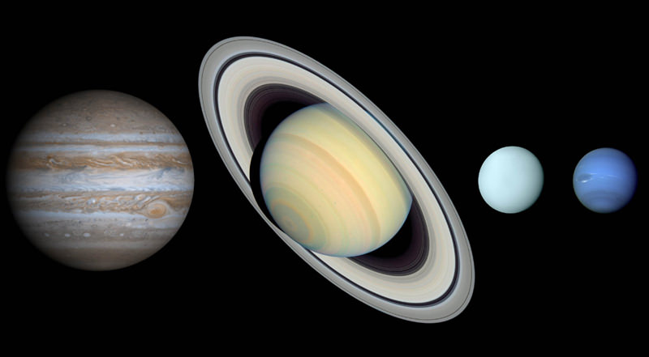
Gassy Planets
The 4 Jovian, or gas planets form around the sun - Jupiter, Saturn, Uranus, and Neptune.
Next Event
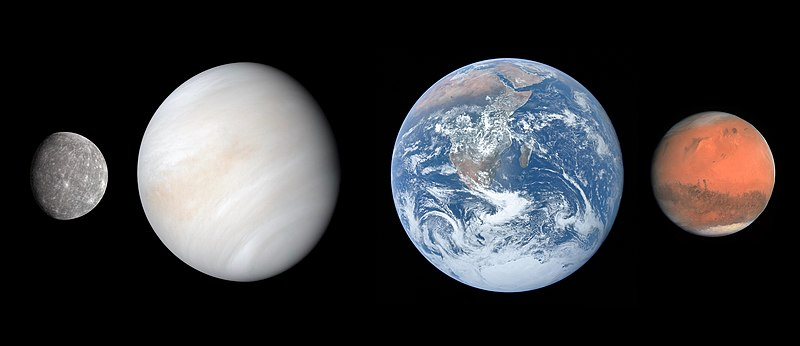
And That’s Us
The 4 terrestrial planets - Mercury, Venus, Earth, and Mars - form around the sun. The Solar System now has 8 planets.
Next Event
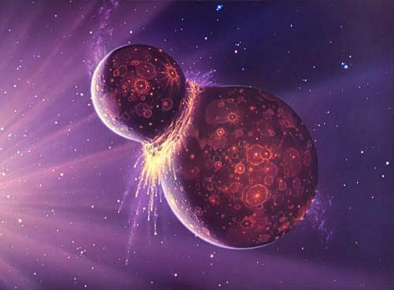
Ah, That’s What’s Been Missing
The moon is formed, theoretically following a collision between Earth and another massive object. As a result, Earth’s axis of rotation is stabilized
Next Event
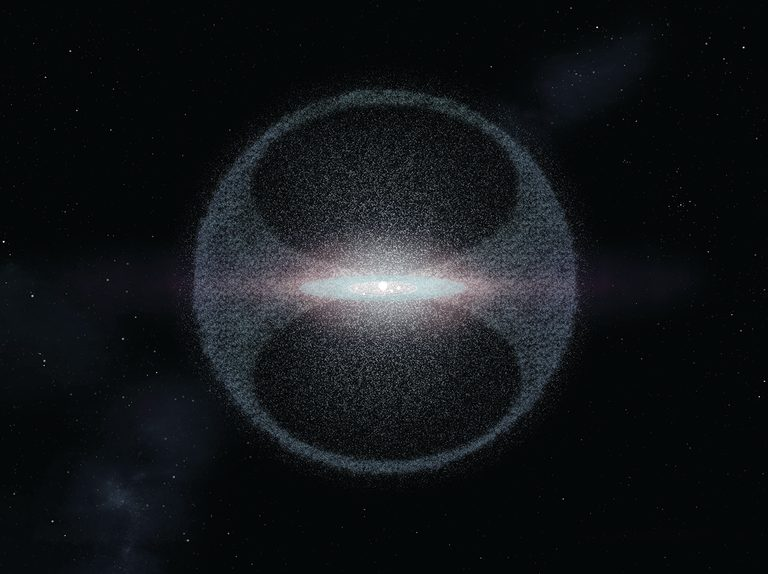
Floating Ice
The Oort Cloud and Kuiper Belt form, which are areas where icy objects orbit the Sun.
Next Event
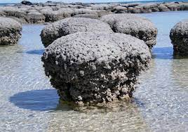
Life!
The oldest known fossils are made, a type of organism called stromatolites.
Next Event
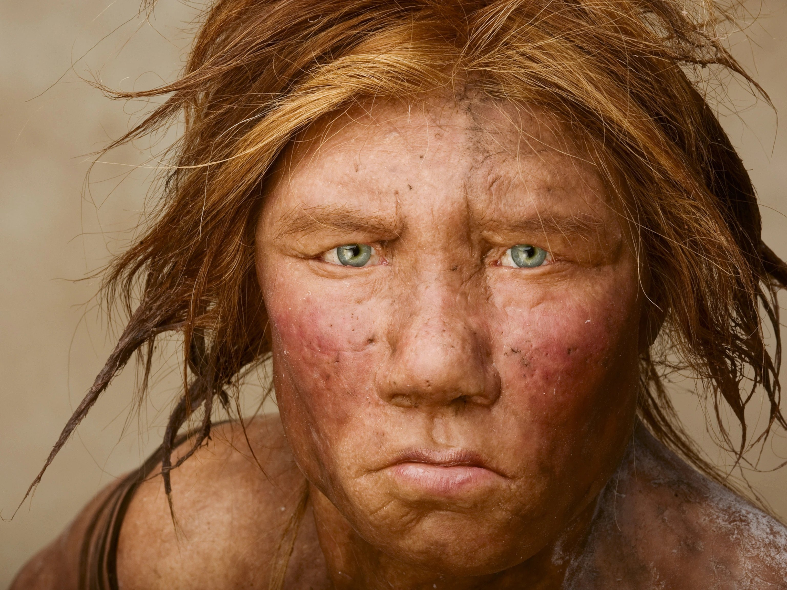
Humans - That’s What We Are
First known appearance of Homo sapiens (modern human) in Africa
All of human history fits within these last 350,000 years, or 350 pixels.